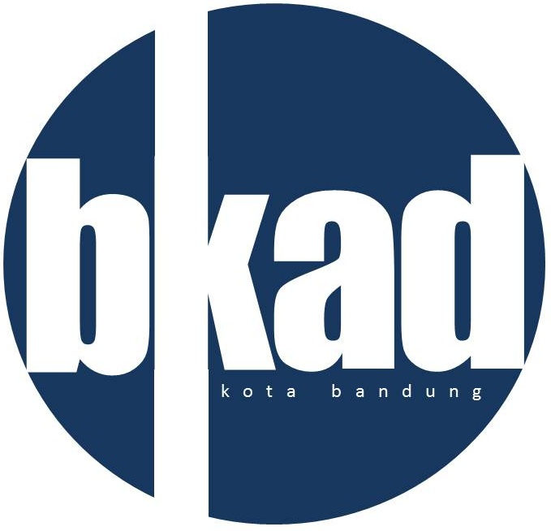

Organizations
-
Badan Kepegawaian dan Pengembangan Sumber Daya Manusia
Badan Kepegawaian dan Pengembangan Sumber Daya Manusia mempunyai tugas pokok...
14 Datasets View Badan Kepegawaian dan Pengembangan Sumber Daya Manusia -
Badan Kesatuan Bangsa dan Politik
Badan Kesatuan Bangsa dan Politik mempunyai tugas pokok yaitu...
9 Datasets View Badan Kesatuan Bangsa dan Politik -

Badan Keuangan dan Aset Daerah
Badan Keuangan dan Aset Daerah mempunyai tugas pokok melaksanakan sebagian...
45 Datasets View Badan Keuangan dan Aset Daerah